Characters/voice
Ackerman Mikasa
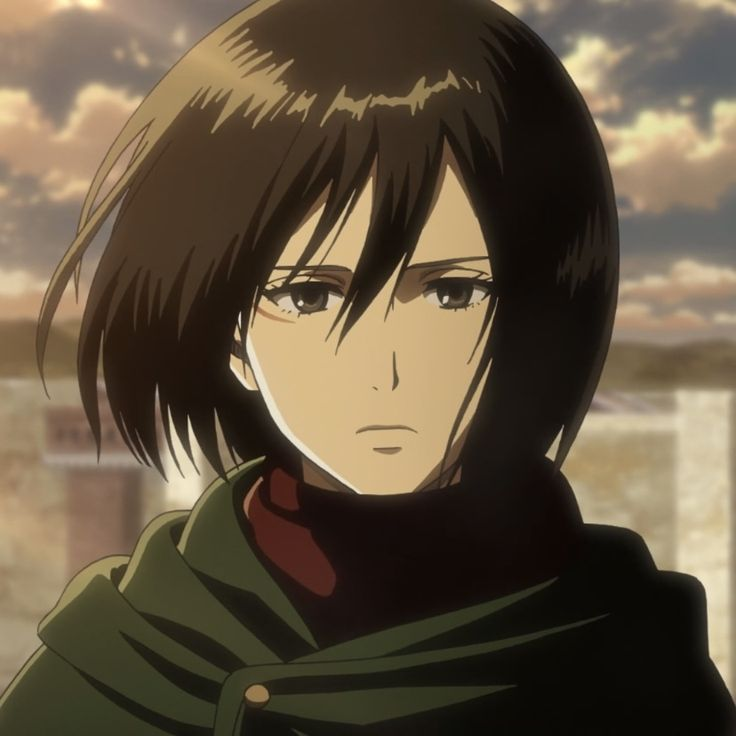
- Nishimura, Trina (English)
- Ishikawa, Yui (Japanese)
- Bienaimé, Nathalie (French)
- Han, Chae Eon (Korean)
- Perino, Elena (Italian)
- Hannak, Nicole (German)
- Stefane, Mayara (Portuguese)
- Lobo, Ana (Spanish)
Arlert Armin
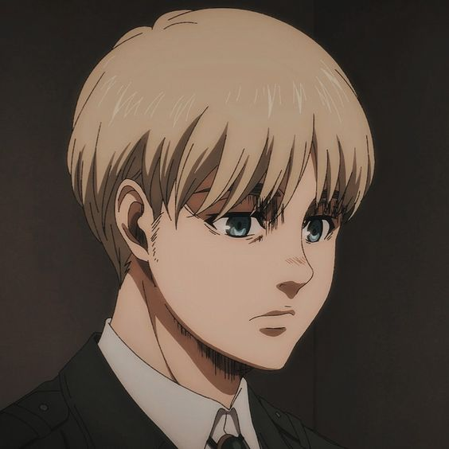
- Grelle, Jessie James (English)
- Inoue, Marina (Japanese)
- Solis, Adrien (French)
- Kim, Seo Yeong (Korean)
- Bolognesi, Gaia (Italian)
- Zeiger, Christian (German)
- Volpato, Pedro (Portuguese)
- de Alba, Héctor Ireta (Spanish)
- Gómez, Marc (Spanish)
Yeager, Eren
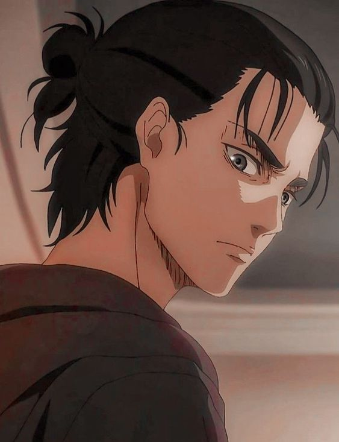
- Papenbrook, Bryce (English)
- Kaji, Yuuki (Japanese)
- Bourlé, Bastien (French)
- Choi, Won Hyeong (Korean)
- Campaiola, Alessandro (Italian)
- Felder, Max (German)
- Almeida, Lucas (Portuguese)
- Leal, Miguel Ángel (Spanish)
- Aguiló, Jaume(Spanish)
Zoë, Hange
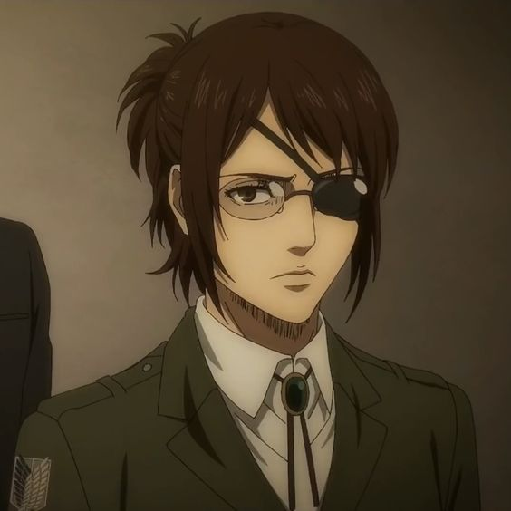
- Calvello, Jessica (English)
- Park, Romi (Japanese)
- Lambotte, Jessie (French)
- Baldini, Antonella (Italian)
- Schmidt, Josephine (German)
- Molinari, Paola (Portuguese)
- Pallarès, Pepa (Spanish)
- Aguirre, Rossy(Spanish)
Zacharias, Mike
- Douglas, Jason (English)
- Miyake, Kenta (Japanese)
- Pascal, Benjamin (French)
- Machelli, Gianluca (Italian)
- Klemm, Matti (German)
- Mazzei, Wilken (Portuguese)
- Allende, David (Spanish)
Ymir
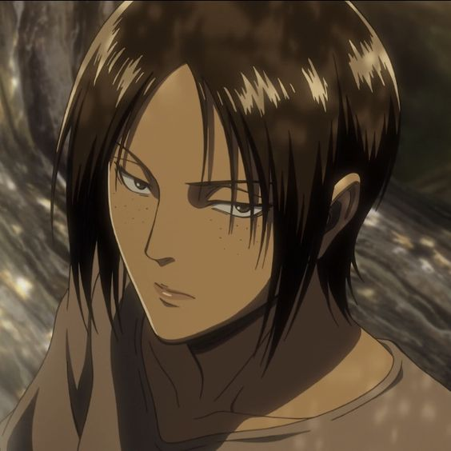
- Maxwell, Elizabeth (English)
- Fujita, Saki (Japanese)
- Jean, Bérangère (French)
- Serpelloni, Mattea (Italian)
- Vural, Esra (German)
- Morais, Ana Maria (Portuguese)
- Galindo, Alina (Spanish)
Yeager, Grisha
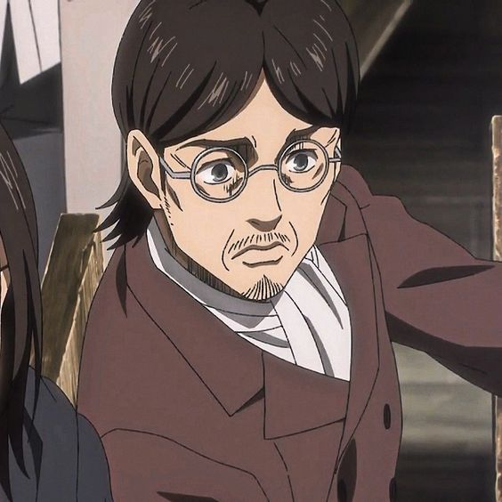
- Hury, Chris (English)
- Tsuchida, Hiroshi (Japanese)
- Gradi, Emmanuel (French)
- Guerrieri, Vittorio (Italian)
- Röth, Frank (German)
- Moreno, Sérgio (Portuguese)
- Ballarta, Carlos(Spanish)
Yeager, Carla
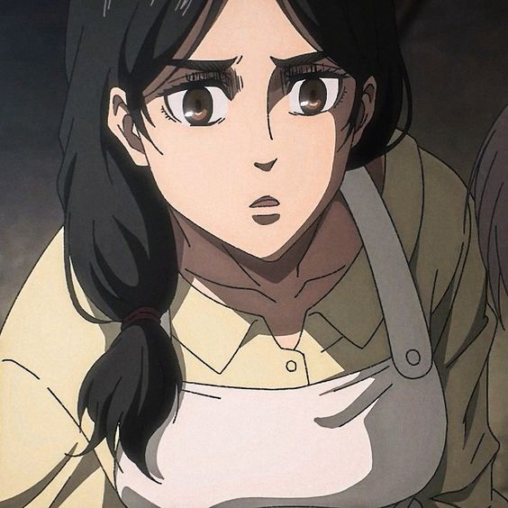
- Cavanagh, Jessica (English)
- Takamori, Yoshino (Japanese)
- Jean, Bérangère (French)
- Di Caccamo, Irene (Italian)
- Hinze, Melanie (German)
- de Almeida, Amazyles (Portuguese)
- Hannidez, Patricia (Spanish)
Springer, Connie
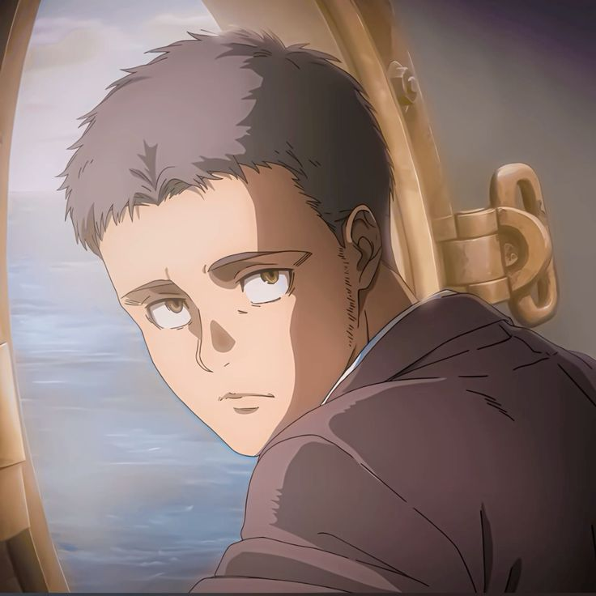
- Chapin, Clifford(English)
- Shimono, Hiro (Japanese)
- Laisné, Grégory (French)
- Hong, Beom Gi(Korean)
- Patriarca, Gabriele (Italian)
- Jellinek, Julius(German)
- Diniz, Diego (Portuguese)
- Bernal, Alberto(Spanish)
Smith, Erwin
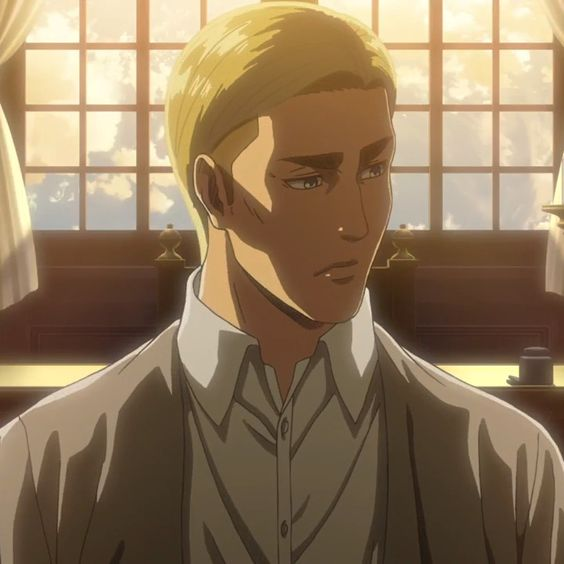
- Tatum, J. Michael (English)
- Ono, Daisuke(Japanese)
- Seugnet, Christophe (French)
- Quarta, Alessandro (Italian)
- Flechtner, Peter (German)
- Marques, Guilherme (Portuguese)
- Rojas, Octavio (Spanish)
Shadis, Keith
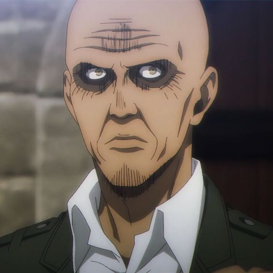
- Seitz, Patrick (English)
- Mogami, Tsuguo (Japanese)
- Pichon, Yann (French)
- Indrio, Saverio (Italian)
- Klebsch, Klaus-Dieter (German)
- Ávila, Cassiano (Portuguese)
- Segundo, Carlos (Spanish)
Ral, Petra
- Glass, Caitlin (English)
- Aikawa, Natsuki (Japanese)
- Combes, Caroline (French)
- Donati, Gemma (Italian)
- Haruno, Mari (Portuguese)
- Cruz, Pamela (Spanish)
Pixis, Dot
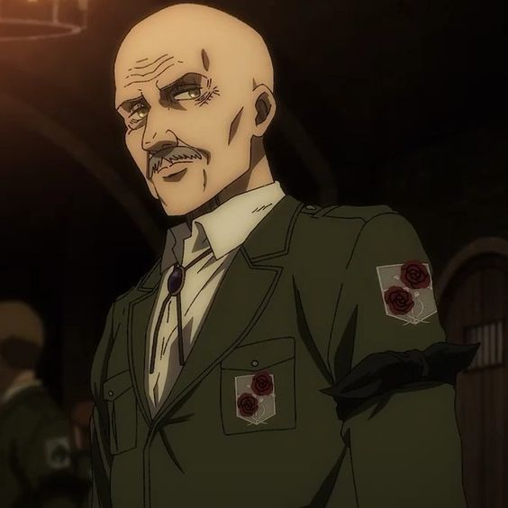
- Elliott, R. Bruce (English)
- Tanaka, Masahiko (Japanese)
- Bretonnière, Marc (French)
- Roffi, Luciano (Italian)
- Gutmann, Elmar (German)
- Vaccari, Hélio (Portuguese)
Levi
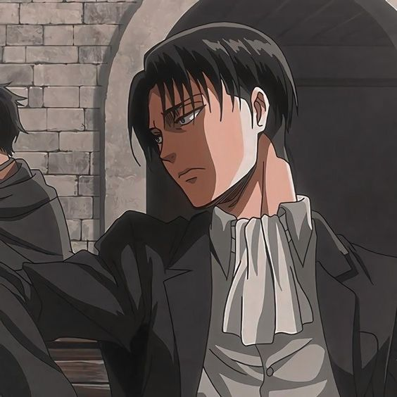
- Mercer, Matthew (English)
- Kamiya, Hiroshi (Japanese)
- Méyère, Bruno (French)
- Raffaeli, Daniele (Italian)
- Halm, Florian (German)
- Sangregório, Bruno (Portuguese)
- García, Héctor (Spanish)
- Basurto, Alfredo Gabriel (Spanish)
Leonhart, Annie
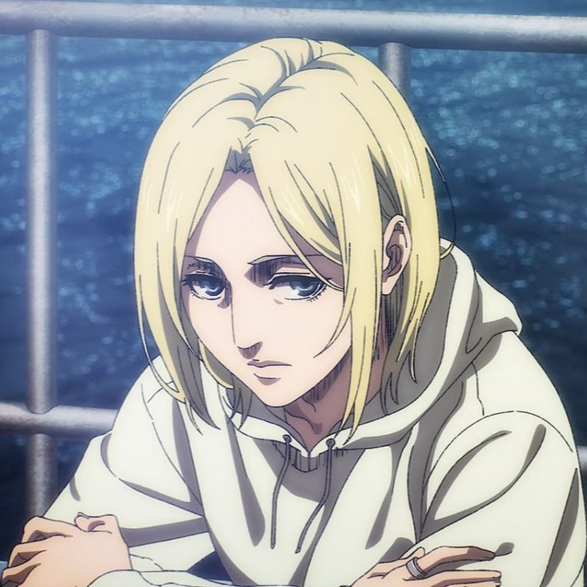
- Landa, Lauren (English)
- Shimamura, Yuu (Japanese)
- Chemin, Pascale (French)
- Gioncardi, Chiara (Italian)
- Oeffinger, Marieke (German)
- Cunha, Maitê (Portuguese)
- Sánchez, Georgina (Spanish)
reiss, historia
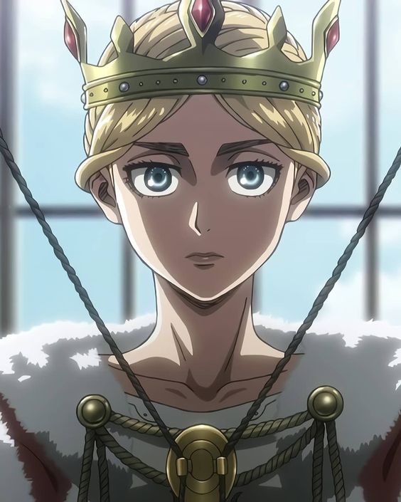
- Apprill, Bryn (English)
- KMikami, Shiori (Japanese)
- Combes, Caroline (French)
- Teresi, Francesca (Italian)
- Blank, Jodie (German)
- de Brito, Giulia (Portuguese)
- Hernández, Cristina (Spanish)
Kirstein, Jean
- McFarland, Mike (English)
- Taniyama, Kishou (Japanese)
- Pascal, Benjamin (French)
- Kim, Jang (Korean)
- Aquilone, Flavio (Italian)
- Dawn-Claude, René (German)
- Berro, Bernardo (Portuguese)
- Ortega, Gerardo (Spanish)
Hannes
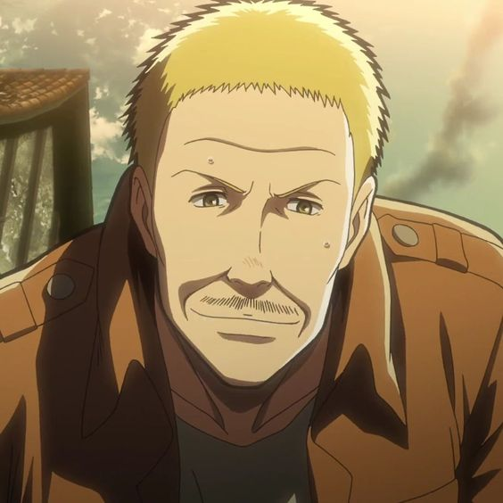
- Wald, David (English)
- Fujiwara, Keij (Japanese)
- Bretonnière, Marc (French)
- Ferraro, Luigi (Italian)
- Moeseritz, Tim (German)
- Zambrano, Thiago (Portuguese)
- Delgado, Víctor (Spanish)
Dreyse, Hitch
- Karbowski, Brittney (English)
- Watanabe, Akeno (Japanese)
- Nonnenmacher, Marie (French)
- Vidali, Valeria (Italian)
- Hönig, Maria (German)
- Guarnieri, Isabella (Portuguese)
- Márquez, Rosalinda (Spanish)
Brzenska, Riko
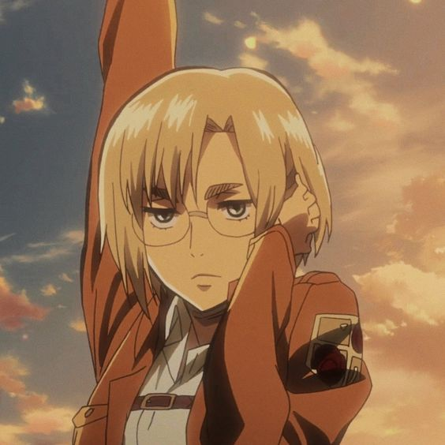
- Garrett, Morgan (English)
- Kaiden, Michiko (Japanese)
- Baranes, Sophie(French)
- Bertolotti, Monica (Italian)
- Isakowitz, Melanie(German)
- Yamada, Juliana (Portuguese)
- Nolan, Diana (Spanish)
Braun, Reiner
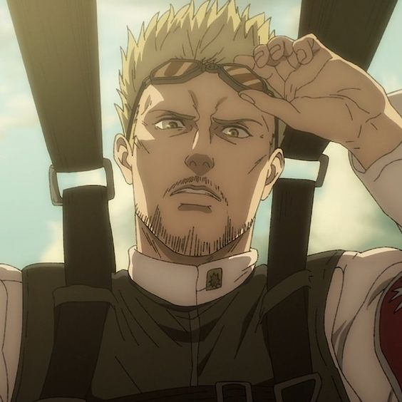
- McCollum, Robert (English)
- Hosoya, Yoshimasa (Japanese)
- BRausenberger, Emmanuel (French)
- Seong, Wan Gyeong (Korean)
- Mete, Andrea (Italian)
- Gavrilis, Marios (German)
- Silva, Dláigelles (Portuguese)
- Obregón, Alfonso (Spanish)
Bott, Marco
- Tindle, Austin (English)
- Oosaka, Ryouta (Japanese)
- Grull, Pascal (French)
- CGiuliani, Daniele (Italian)
- Bösherz, Konrad(German)
- Córdova, Thiago (Portuguese)
- López, Óscar (Spanish)
Blouse, Sasha
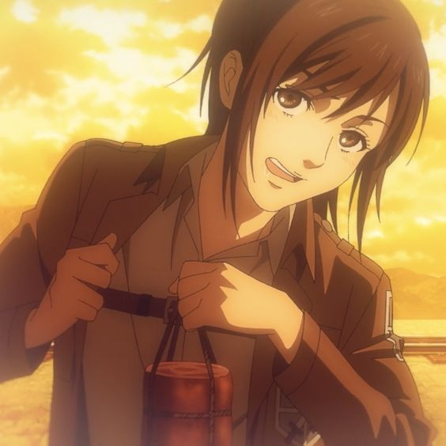
- Burch, Ashly (English)
- Kobayashi, Yuu (Japanese)
- Nonnenmacher, Marie (French)
- Kim, Seon Hye (Korean)
- Favazza, Valentina (Italian)
- Mohr, Lina Rabea (German)
- Cadamuro, Ana Paula (Portuguese)
- Medel, Jennifer (Spanish)
Staff
- Cook, Justin (Producer)
- Furukawa, Shin (Producer)
- Kinoshita, Tetsuya (Producer)
- Maeda, Toshihiro (Producer)
- Nakatake, Tetsuya (Producer)
- Tateishi, Kensuke (Producer)
- Wada, Jouji (Producer)
- Araki, Tetsurou (Director, Episode Director, Storyboard)
- Mima, Masafumi (Sound Director)
- Bessho, Makoto (Episode Director, Storyboard, Key Animation)
- Ezaki, Shinpei (Episode Director, Storyboard)
- Fujiwara, Yoshiyuki (Episode Director, Key Animation)
- Fukumoto, Kiyoshi (Episode Director)
- Ikeda, Tomomi (Episode Director)
- Ishihama, Masashi (Episode Director, Storyboard, Key Animation, Animation Director)
- Itoga, Shintaro (Episode Director)
- Koizuka, Masashi (Episode Director, Storyboard, Assistant Director, Character Design, Chief Animation Director, Key Animation)
- Minamikawa, Tatsuma (Episode Director, Assistant Director)
- Tachikawa, Yuzuru (Episode Director, Storyboard)
- Tanaka, Hiroyuki (Episode Director, Assistant Director)
- Tokudo, Daisuke (Episode Director, Storyboard, Key Animation)
- Wakabayashi, Shin (Episode Director, Storyboard)
- Yamada, Hirokazu (Episode Director)
- Yamamoto, Sayo (Episode Director, Storyboard)
- Yokoyama, Akitoshi (Episode Director, Storyboard, Key Animation, 2nd Key Animation)
- Burgmeier, John (Script)
- Kobayashi, Yasuko (Script, Series Composition)
- Medel, Jennifer (Script, Dialogue Editing)
- Rinehart, Tyson (Script)
- Seko, Hiroshi (Script)
- Takagi, Noboru (Script)
- Tatum, J. Michael (Script)
- Hirata, Tomohiro (Storyboard, Key Animation)
- Komatsuda, Daizen (Storyboard)
- Miyaji, Masayuki (Storyboard)
- Oohara, Minoru (Storyboard)
- Sasajima, Keiichi (Storyboard)
- Cinema Staff (Theme Song Performance)
- Hikasa, Youko (Theme Song Performance)
- Ishizuka, Rei (Theme Song Composition)
- Kameda, Seiji (Theme Song Arrangement)
- Linked Horizon (Theme Song Performance)
- Revo (Theme Song Lyrics, Theme Song Arrangement, Theme Song Composition)
- Abe, Misao (Key Animation)
- Akao, Ryoutarou (Key Animation)
- Anne Paillié, Mélanie (ADR Director)
- Aoki, Mariko (Key Animation, 2nd Key Animation)
- Arai, Kouichi (Key Animation)
- Arao, Hideyuki (Key Animation)
- Asano, Kyouji (Chief Animation Director, Key Animation, Character Design, Animation Director)
- Awai, Shigeki (Key Animation, 2nd Key Animation)
- Blackschleger, Aimee (Inserted Song Performance)
- Chiba, Takaaki (2nd Key Animation, Chief Animation Director, Animation Director, Setting, Key Animation)
- Cyua (Inserted Song Performance)
- Dawn-Claude, René (ADR Director)
- Ebara, Yasuyuki (Animation Director, Assistant Animation Director, Key Animation, 2nd Key Animation)
- Ebisu, Takuma (2nd Key Animation, Animation Director, Assistant Animation Director, Key Animation)
- Emoto, Masahiro (Key Animation)
- Endou, Eiichi (Key Animation)
- Enomoto, Hanako (2nd Key Animation)
- Fujii, Toshirou (Key Animation)
- Fujiki, Nana (Key Animation)
- Fujita, Masayuki (Animation Director)
- Fujita, Erika (Color Setting)
- Fukunaga, Gen (Executive Producer)
- Gotou, Masami (Key Animation)
- Habe, Takashi (Key Animation)
- Hagiwara, Hiromitsu (Key Animation)
- Hamaguchi, Akira (Key Animation)
- Hasegawa, Saki (Key Animation, 2nd Key Animation)
- Hasegawa, Hitomi (Key Animation, 2nd Key Animation, Assistant Animation Director, Animation Director)
- Hasegawa, Michio (Animation Director)
- Hashimoto, Hisanori (Key Animation)
- Hashimoto, Satoshi (Color Design)
- Hattori, Ichirou (Animation Director)
- Hida, Aya (Editing)
- Hiramatsu, Tadashi (Key Animation)
- Hirose, Izumi (Color Setting)
- Hoshino, Reika (Animation Director)
- Ikariya, Atsushi (Key Animation)
- Imada, Akane (Key Animation)
- Imai, Yousuke (Planning Producer)
- Imai, Arifumi (In-Between Animation, Animation Director, Key Animation)
- Isayama, Hajime (Original Creator)
- Ishii, Yumiko (Animation Director, Key Animation)
- Ishikawa, Mitsuhisa (Executive Producer)
- Itou, Youhei (Associate Producer)
- Itou, Tatsufumi (Key Animation)
- Kadowaki, Satoshi (Assistant Animation Director, Chief Animation Director, Key Animation, Animation Director, 2nd Key Animation)
- Kamiya, Tomomi (2nd Key Animation, Key Animation)
- Kamogawa, Takahiro (2nd Key Animation)
- Katou, Hiromi (Key Animation)
- Kawai, Yuumi (Key Animation)
- Kawakubo, Shintarou (Planning)
- Kitayama, Shuichi (Key Animation)
- Kobayashi, Mika (Inserted Song Performance)
- Kobayashi, Naoki (Key Animation)
- Komaru, Toshiyuki (Key Animation)
- Kouno, Toshiya (2nd Key Animation)
- Koyanagi, Tatsuya (Key Animation)
- Kubota, Chikashi (Key Animation)
- Kudou, Akiko (Animation Director)
- Kurahashi, Shizuo (Sound Effects)
- Laisné, Grégory (ADR Director)
- Liang, Boya (Key Animation)
- Maeda, Yoshihiro (Key Animation)
- Marques, Guilherme (ADR Director)
- Maruyama, Hiroo (Planning Producer)
- Matsushita, Takuya (Planning Producer)
- Matsutake, Tokuyuki (Key Animation)
- McFarland, Mike (ADR Director)
- Miki, Tatsuya (Key Animation)
- Miwa, Kazuhiro (Key Animation)
- Miyai, Kana (Animation Director)
- Miyazaki, Satomi (Animation Director)
- Mogi, Takahiro (Color Setting)
- Morishita, Katsuji (Planning Producer)
- Moriyama, You (Key Animation)
- Nakagawa, Hideki (Key Animation)
- Nakashige, Shunsuke (2nd Key Animation, Key Animation)
- Ogata, Ai (Key Animation)
- Okabe, Jun (Background Art)
- Ooima, Yoshitoki (Principle Drawing)
- Ortega, Gerardo (ADR Director)
- Ozaki, Tomomi (Character Design)
- Saitou, Daisuke (Animation Director)
- Sakai, Satoshi (Animation Director)
- Sangregório, Bruno (ADR Director)
- Satou, Toshiyuki (In-Between Animation, Key Animation, Animation Director)
- Satou, Michio (Animation Director)
- Sawano, Hiroyuki (Music)
- Sera, Kouta (Key Animation, Animation Director)
- Shibata, Shirou (Key Animation)
- Shimizu, Norie (Publicity)
- Shimizu, Katsuhiro (Animation Director)
- Shiotani, Naoyoshi (Key Animation)
- Shiozawa, Kaname (Key Animation)
- Shoukinji, Naoko (Key Animation)
- Tabata, Akira (Key Animation)
- Takahashi, Hideki (Key Animation)
- Takeuchi, Akira (Animation Director)
- Tanaka, Orie (Key Animation)
- Tanaka, Hironori (Key Animation)
- Tanino, Miho (2nd Key Animation)
- Tatezaki, Hiroshi (Animation Director)
- Tomita, Megumi (Animation Director, Assistant Animation Director)
- Tsubata, Yoshiaki (Key Animation)
- Tsubota, Shintarou (Key Animation)
- Uchiyama, Midori (Key Animation, 2nd Key Animation)
- Uehara, Makito (Key Animation)
- Umishima, Senbon (Key Animation)
- Wanibuchi, Kazuhiko (Key Animation)
- Washio (Key Animation)
- Yamada, Kazuhiro (Director of Photography)
- Yamamoto, Yuuko (Animation Director)
- Yamamura, Shunsuke (Animation Director)
- Yamanaka, Makiko (Color Setting)
- Yamatani, Naoto (Sound Effects)
- Yoshibe, Naoki (Key Animation)
- Yoshida, Kenichi (Key Animation)
- Yoshihara, Shunichirou (Art Director)
- mpi (Inserted Song Performance)